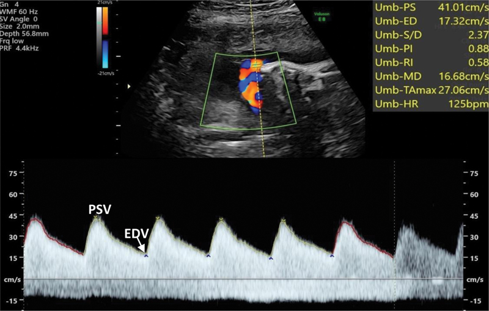

Página 11 · Sofrimento fetal crônico
A artéria umbilical: o vaso da placenta
Ao final desta página você vai saber ler a artéria umbilical:
- o que a umbilical estuda;
- as três formas de medir a resistência (IR, IP, S/D);
- o normal (< p95) e por que a resistência cai com a gestação;
- por que resistência alta gera feto pequeno;
- qual é o primeiro sinal no traçado.
O que a umbilical estuda
O que a umbilical estuda. O Doppler da artéria umbilical estuda a função e a circulação placentária — é o vaso para investigar insuficiência placentária. Se a placenta é a fonte do problema na restrição verdadeira, a umbilical é a janela para ela.
As três formas de medir resistência
As três formas de medir resistência. Há três formas de avaliar a resistência do vaso, e a prova pode usar qualquer uma: índice de resistência (IR), índice de pulsatilidade (IP) e relação sístole/diástole (S/D). São três nomes para a mesma ideia — quão difícil está para o sangue passar.
O normal: baixa resistência, abaixo do percentil 95
O normal: baixa resistência, < p95. Os vasos umbilicais (artéria e veia) fazem a troca materno-fetal; conforme o feto cresce, o vaso permite maior fluxo, melhorando as trocas. Por isso o normal da umbilical é ser um vaso de baixa resistência, abaixo do percentil 95 para a idade gestacional.
A resistência cai com a gestação
A resistência cai com a gestação. E há um detalhe que vira pegadinha: a resistência tende a cair cada vez mais ao longo da gestação — é tabela por idade gestacional, não número decorado. Semana após semana, o esperado é: queda de resistência → aumento de fluxo → trocas boas.
Interativo: suba a resistência e veja a diástole afundar.
O normal da umbilical é baixa resistência (< p95), que cai com a gestação. Quando a resistência sobe, o fluxo cai e o primeiro sinal é a diástole apenas afundando — antes de zerar.Resistência alta → fluxo baixo → feto pequeno
Resistência alta → fluxo baixo → feto pequeno. Quando o esperado se inverte, o dano começa. Se a resistência aumenta (passa do percentil 95), o fluxo diminui; com menos sangue passando, o feto fica pequeno. É exatamente aqui que o Doppler encaixa no conceito de restrição: a umbilical alterada é a tradução hemodinâmica do feto que não cresce.

Ondas em “dente de serra”, com pico sistólico bem definido e fluxo que permanece acima da linha de base durante toda a diástole (velocidade diastólica final positiva) — baixa resistência placentária. Diferente da diástole zero e da reversa.
Rocha AS et al. Rev Bras Ginecol Obstet (PMC/Thieme) · fonte / licença: CC BY 4.0
O primeiro sinal: a diástole afunda
O primeiro sinal: a diástole afunda. E o primeiro sinal no traçado, quando a resistência sobe, é discreto: a diástole começa a afundar. Ainda não zerou, ainda não reverteu — só afundou. Guardar esse “primeiro sinal” é o que permite agir cedo.
Quiz — fixação
O que caracteriza o Doppler normal da artéria umbilical?
- Gabarito A. Baixa resistência, < p95, caindo com a gestação = trocas cada vez melhores.
- B alta resistência / > p95 é o anormal (fluxo caindo).
- C a diástole normalmente está presente e cheia; sua ausência (zero) é grave.
- D o esperado é a resistência cair, não subir, ao longo da gestação.
A resistência da umbilical ultrapassa o percentil 95. Qual a consequência e o primeiro sinal no traçado?
- Gabarito A. Resistência ↑ → fluxo ↓ → feto pequeno; e o primeiro sinal é a diástole afundando.
- B resistência alta reduz o fluxo — não o aumenta.
- C quem afunda/desaparece primeiro é a diástole, não a sístole.
- D há repercussão direta — é o elo hemodinâmico da restrição.